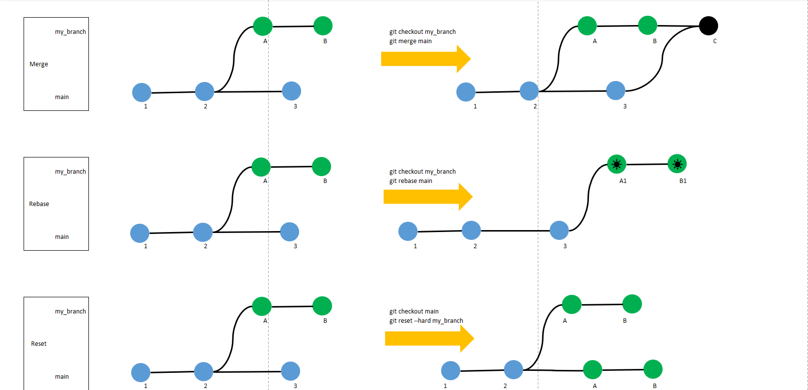
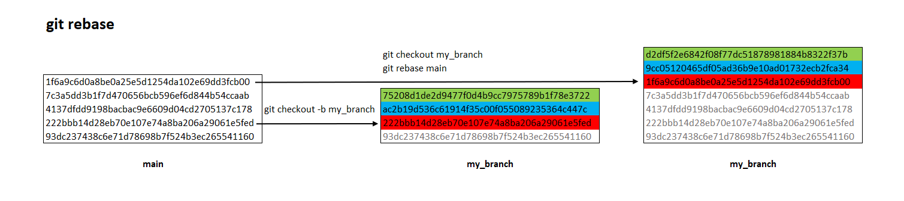

Git常用命令
基本操作
查看远程连接关系
git remote -v切换已存在本地分支
git checkout my_branch如果本地分支不存在，从当前分支创建新分支并切换到新分支
git checkout -b my_branch同名分支, 从远程拉取更新到本地 (注意
git pull只拉取当前分支, 所以注意先切换分支)git pull添加本地更改
git add -A提交本地更改
git commit -m 'comment'同名分支, 从本地推送更新到远程
git push origin my_branch
高级操作
远程覆盖本地(强制)
用远程分支
origin/my_branch重写本地main分支git checkout main git reset --hard origin/my_branch本地覆盖远程(强制)
git push origin main --force
git branch 分支操作
列出本地存在的分支，当前分支的前面用*标记
git branch列出所有远程分支
git branch -r列出所有分支，包括本地和远程
git branch -a创建分支
git branch my_branch从远程分支创建本地分支，并建立对应关系
git branch my_branch origin/my_branch删除分支
git branch -d my_branchgit branch -D my_branch #强制删除分支删除远程分支
git push origin --delete my_branch查看本地分支与远程分支的对应关系
git branch -vv重命名分支
git branch -m my_branch my_newBranch
git checkout
操作文件
放弃单个文件的修改git checkout filename放弃当前目录下的修改
git checkout .操作分支
将分支切换到maingit checkout main如果本地分支不存在，则先创建分支，再切换到新分支
git checkout -b my_branch
合并分支git merge vs git rebase
本地2个分支合并, 将
my_branch合并到maingit checkout main git merge my_branchTip
假如合并由冲突，需要手动解决冲突。
不同分支之间的同步, 用
rebase命令将分支my_branch的基修改到main最新提交git checkout my_branch git rebase mainTip
rebase也可能遇到冲突， 对于每个冲突文件，需要手动合并
git add -A git commit -m "resolve conflicts"然后，
git rebase --continue
附件
git分支合并方式示意图 
{kind=link}
git rebase示例 
{kind=link}